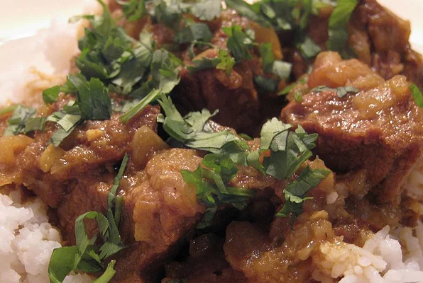

Home
Cooking from Bangladesh is an intitiave from The Triangle Bangladesh Society of North Carolina. We seek to introduce people to Bengali culture through our food. Food plays an integral role in our lives and we hope you can learn more about our culture through our delicious recipes. Below here you can see a gallery of featured recipes, you may also search for different recipes using the search link above. In addition to that you can use the Find Ingredients link to find places to buy Bengali ingredients. (todo implement JavaScript gallery)
Featured Recipes

Bengali Beef Curry
This spicy beef curry is best served with plain basmati rice or eaten with naan or pita bread. View Recipe